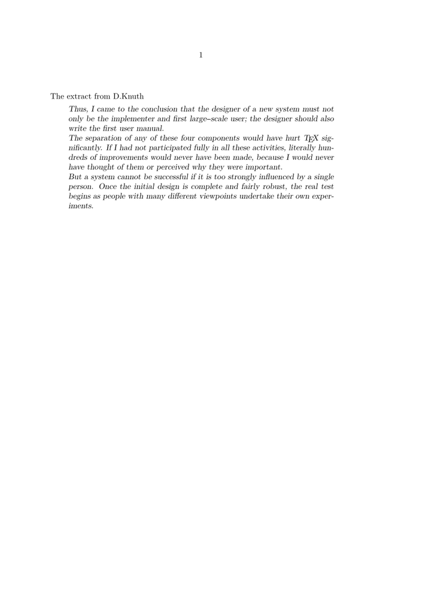

Syntax (autogenerated)
| \definestartstop[...][...][...=...,...] | |
| [...] | name |
| [...] | name |
| ...=...,... | inherits from \setupstartstop |
| \setupstartstop[...,...][...=...,...] | |
| [...,...] | name |
| before | command |
| after | command |
| inbetween | command |
| setups | name |
| left | command |
| right | command |
| style | style command |
| color | color |
Description
Used to define block level commands.
Example
Example: Long Quotations
-
\setuppapersize[A5] \defineblank[ExtractDistance][3pt] \definestartstop[Extract][ style=slanted, before={\blank[ExtractDistance] \setupnarrower[left=1.5pc,right=1.5pc] \startnarrower[left,right] \noindent}, after={\stopnarrower \blank[ExtractDistance] \indenting[next]}] %Now the following commands are available: \startExtract and \stopExtract \starttext The extract from D.Knuth \startExtract \input knuth \stopExtract \stoptext
- 
Example: Visualization of left/right, before/after (Source)
-
\usemodule[visual] \definestartstop [Example] [before={\par\leftaligned{\tttf [before]}\par}, after={\par\leftaligned{\tttf [after]}\par}, left={{\tttf [left]}}, right={{\tttf [right]}}] \starttext \fakewords{10}{20} \startExample \fakewords{10}{20} \stopExample \fakewords{10}{20} \blank \fakewords{3}{5} \Example{\fakewords{3}{5}} \fakewords{3}{5} \stoptext
See also
Help from ConTeXt-Mailinglist/Forum
All issues with: